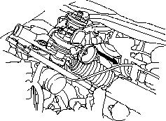
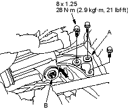
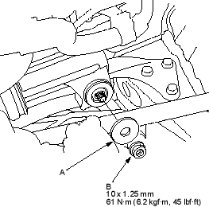
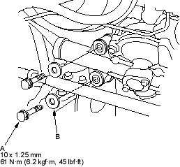

- Before installing the gearbox, slide the rack all the way to the passenger's side (RHD: left direction, LHD: right direction).
- Pass the passenger's side of the steering gearbox together with the tie-rods through the wheel well opening on the passenger's side. Continue moving the steering gearbox toward the passenger's side until the driver's side rack end clears the master cylinder. Lower the driver's side (pinion side) of the steering gearbox, and back it toward the driver's side until the steering gearbox is in position.

- Install the pinion shaft grommet.
- Install the left gearbox mounting bracket (A) on the frame.

- Slip the left side of the steering gearbox over the mounting stud (B) on the left gearbox mounting bracket.
- Install the washer (A) and the gearbox mounting nut (B) and lightly tighten.

- Insert the pinion shaft up through the bulkhead, and install the left gearbox mounting bolts (A) and washers (B), and tighten them to the specified torque. Then tighten the right side of the gearbox mounting nut to the specified torque value.
